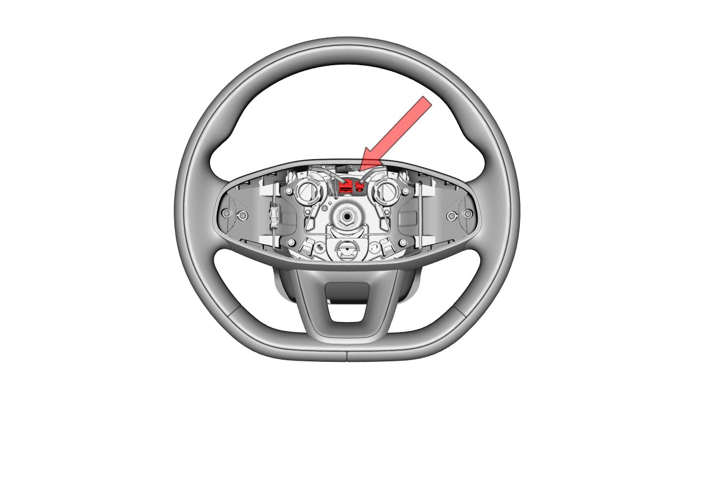
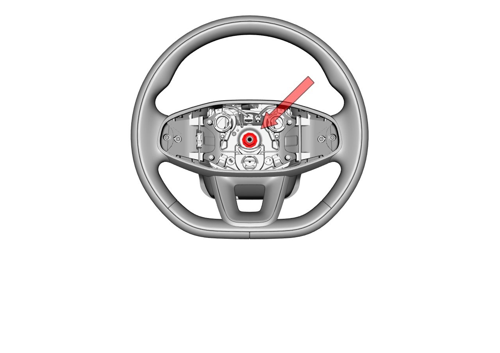

Снятие
Сначала снять подушку безопасности водителя, см. способ снятия и установки подушки безопасности водителя
Перед Снятие рулевого колеса убедиться, что рулевое колесо находится в среднем положении, колеса — в положении для движения прямо, затем заблокировать рулевое колесо.
При Снятие рулевого колеса соблюдать осторожность в отношении меток на рулевой колонке и рулевом колесе. Если на рулевой колонке нет меток, перед Снятие рулевого колеса сделать метку на рулевой колонке с помощью маркера.
Не пытайтесь снять рулевое колесо ударами молотка по валу. Это приведет к повреждению рулевой колонки.
Заглушить двигатель или выключить Питание автомобиля, переведя его в неподвижное состояние.
Снять подушку безопасности водителя.
Ссылка: Подушка безопасности водителя
Отсоединить разъем на рулевом колесе, сопрягаемый с поворотным контактом.

Ослабить стопорную гайку рулевого колеса, оставив 2-3 нитки резьбы. Инструмент: торцевая головка (18).

Покачать рулевое колесо вперед-назад и из стороны в сторону до полного отсоединения.
Установка
Перед Установка рулевого колеса убедиться, что колеса находятся в положении для движения прямо. При Установка рулевого колеса обеспечить совмещение положения рулевого колеса с меткой на рулевой колонке.
Установка выполняется в порядке, обратном снятию. Инструмент: торцевая головка (18), момент затяжки: 33 ± 4 N.m. После установки необходимо выполнить регулировку углов установки колес для обеспечения центровки рулевого колеса